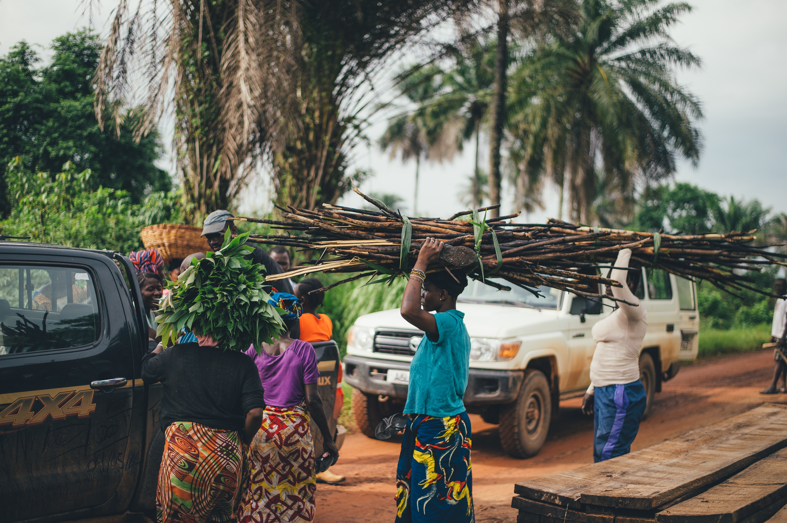
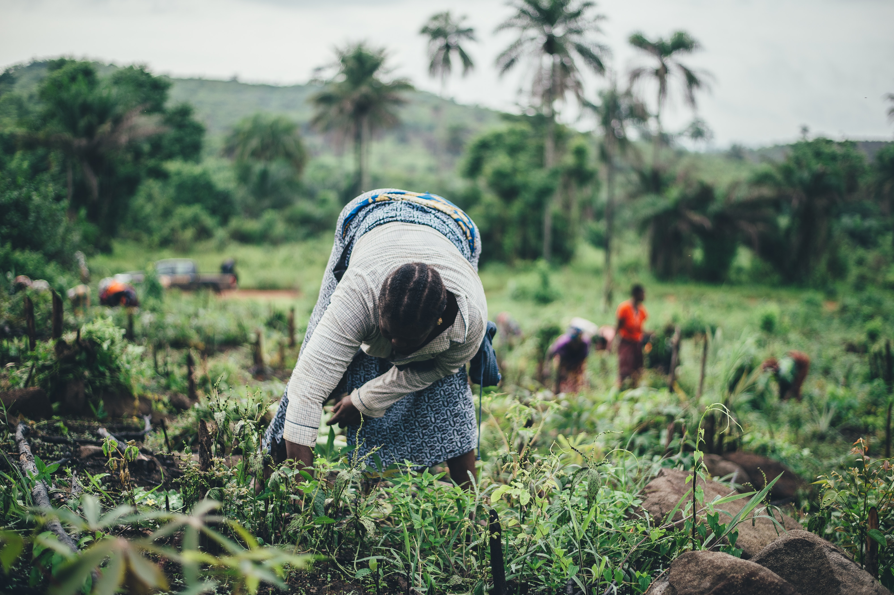
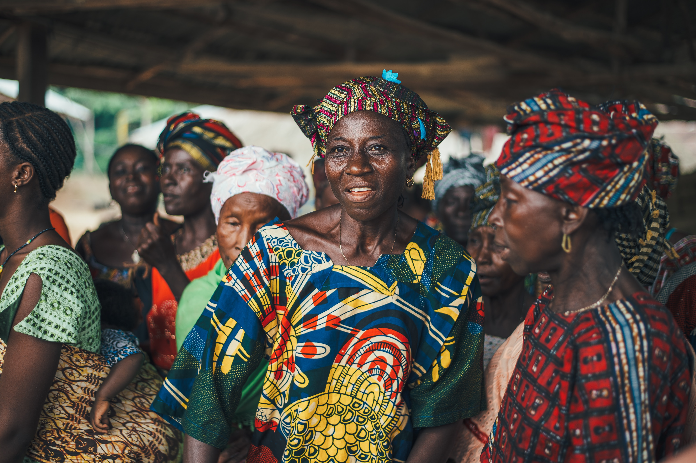
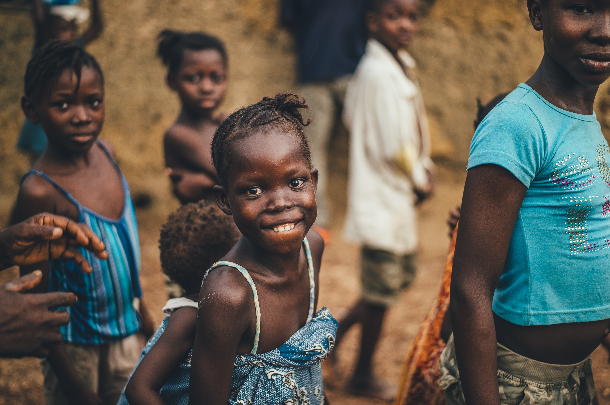

-
   
-
Meet Our Farmers
Agriculture / April 25, 2019
Meet farmer Valeria Dery (61), one of Tieme Ndo’s gallant farmers. She is a farmer and a weaver. Before she joined Tieme Ndo in 2017, she used to grow maize in her backyard farm. Barely a year after joining Tieme Ndo, she has expanded beyond her backyard farm to cultivating one acre of maize, rice and groundnuts. According to Mrs Dery, she does not have to worry anymore about mobilizing funds to pay upfront for seeds and fertilizers, unlike previous years. For not paying cash for fertilizers and seeds, Mrs Dery now uses her money to buy more weaving threads to expand her weaving business. The power of a small asset-based loan to a rural farmer is limitless.Through our training sessions and a “strong farmer group system”, where farmers meet every month to share ideas and support each other, Mrs Dery has learned to implement Good Agricultural Practices such as; planting in straight rows using strings and pegs, on time fertilizer application etc. This has helped her increase her maize yields from 3bags in 2017 to 7bags in 2018; about 133% increase.For her, hard work, willingness to adopt and implement improved farm practices and commitment to the ideals of the organisation, Mrs Dery was crowned the overall best farmer of the year among Tieme Ndo farmers during its Second Annual Farmers’ Forum held in December, 2018 in Nandom, Upper West Region. The forum is an annual event organised by the organisation to create a platform for farmers to meet and share their ideas, fears, and aspirations and reward farmers for their commitment and collective effort to fight hunger and poverty.
-
Opportunity To Empower Smallholder Farmers – Apply To Join Our Team As An Agronomist
Agriculture / February 1, 2019
Tieme Ndo, a thriving agribusiness startup in Nandom, is looking for an Agronomist for a full time employment role in the organisation. To apply for this opportunity, you should have a high interest in agriculture or working with rural folks. Tieme Ndo was founded in 2017 with the sole mission to transform all rural farmers to agriprenuers in Africa. To this end, Tieme Ndo has impacted more 1000 rural farmers by increasing their access to fertilizers, seeds, weedicides and other farm inputs at the time they need them most. Tieme Ndo has also held workshops to train farmers on Good Agriculture Practice (GAP). Tieme Ndo is a partner with Distribution Prize Foundation in San Francisco and Ford Foundation (in collaboration with Ashesi University). At Tieme Ndo, we believe that, when women are empowered, trusted and supported, they rise above all odds to achieve great things. Mrs Dery is one of the 10 female farmers we empower to double their crop yields and income every year. Women contributes over 50% of the agriculture labor force in Africa and we believe that, female farmers are poised to contribute achieve SDG goal 1 and 2. There are a lot more thousands of women with children, especially widows out there who depend largely on agriculture to feed their children. With small asset-based loans, they could do more with their lives and earn more for their families. Tieme Ndo is forever grateful to all women for their commitment to the organisation.
-
Nandom Farmers Increase Yields By 35%
Uncategorized / January 15, 2019
Over one thousand smallholder farmers in the Nandom District of the Upper West Region have been given improved and certified seeds, fertilizers and ploughing services to help them improve their livelihoods. The farmers were also trained on best agricultural practices and offered extension services to help them increase their yield while avoiding Post-Harvest Losses (PHL). This has led to farmers increasing their yield from 25 percent in 2017 to 35 percent in 2018. This translates into between four and six bags an acre in 2018 as compared to between one and four bags in 2017. Tieme Ndo which translates to ‘Push me Up’ in Dagaare is a social enterprise which focuses on providing farm inputs on both cash and credit to smallholder farmer cooperatives in a bid to help them improve their livelihoods Since it began its operations in 2017, Tieme Ndo has reached over one thousand smallholder farmers in Nandom, Jirapa, Lawra and Lambussie distributing over four thousand bags of fertilizer and hundreds of certified seed packets.
-
Volunteering Opportunity At Tieme Ndo Social Enterprise
Uncatigorized / November 22, 2018
To young agriculture enthusiasts, Tieme Ndo, a thriving agribusiness startup in Nandom, is looking for volunteers (especially, students from Upper West) who are interested in getting practical experience in working with farmers or a social enterprise. To apply to volunteer at Tieme Ndo Annual Farmers’ Forum in Nandom. Tieme Ndo was founded in 2017 with the sole mission to empower rural folks in Northern Ghana to increase crop productivity, earn more income end food insecurity and become financially independent. To this end, Tieme Ndo has impacted more than 1500 rural farmers by increasing their access to fertilizers, seeds, herbicides and other farm inputs at the time they need them most. Tieme Ndo has also held workshops to train farmers on Good Agriculture Practice, GAP. Details about the volunteer role: This role is to assess farmers’ performance for the 2019 farming season, Tieme Ndo’s impact on their lives and their perception about the organization . The results of the assessment will be presented to farmers and other stakeholders in the Nandom District during Tieme Ndo Farmers’ Forum scheduled on 23th December, 2019.